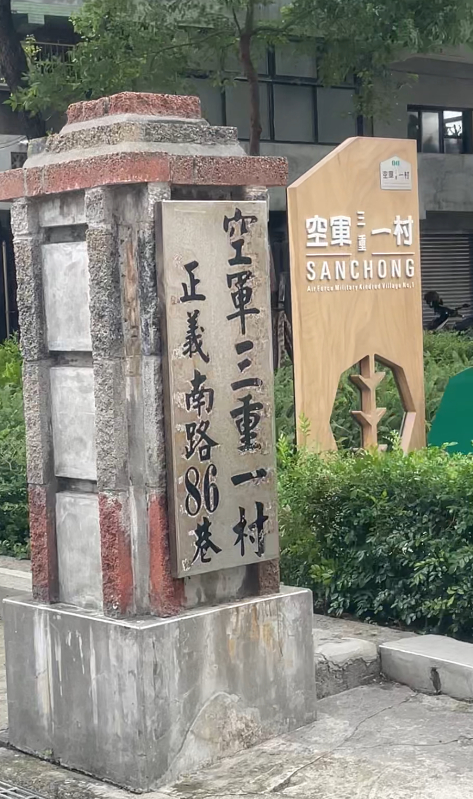
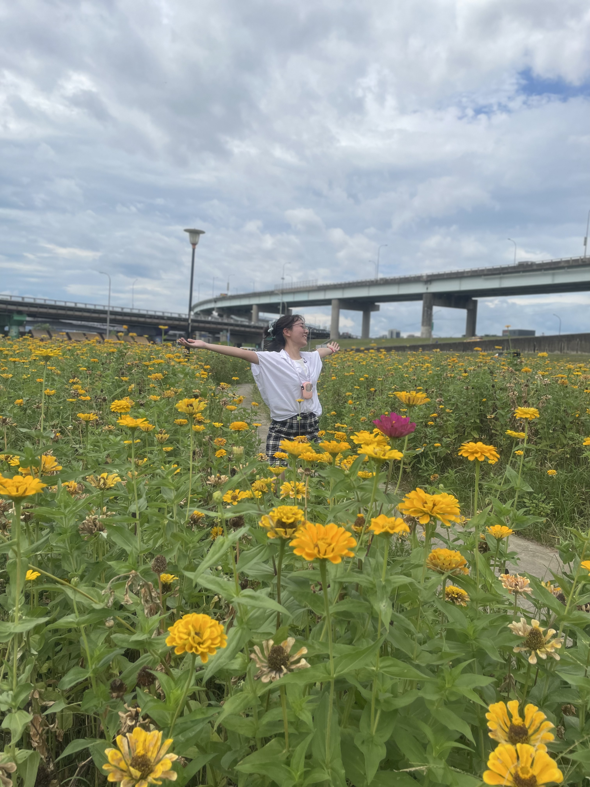
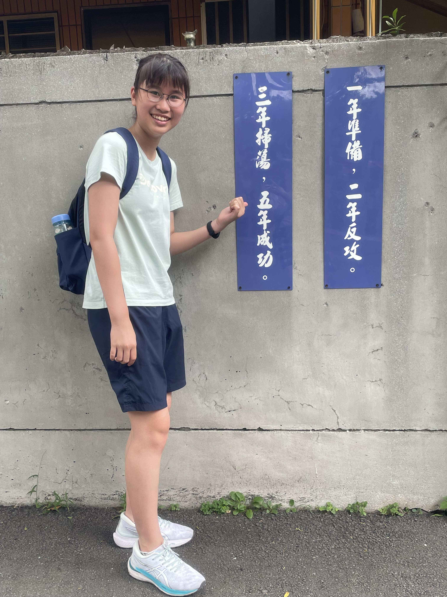
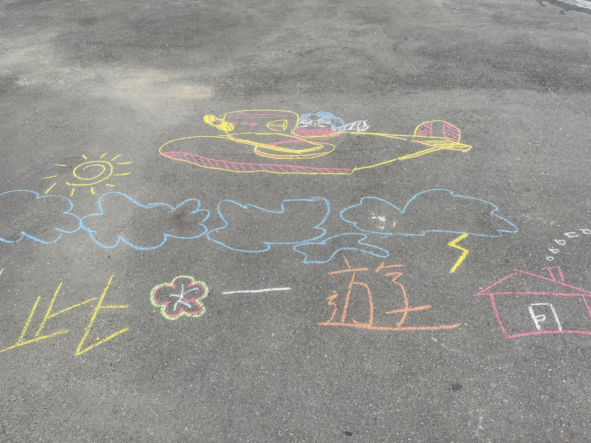

新北市三重區
基本資訊
位於台北盆地西北部，東臨台北市大同區與蘆洲區，南接中和區，西靠新莊區，北邊隔淡水河與五股區相望，是新北市人口密度最高的行政區之一。三重區因地理位置居於台北都會核心地帶，交通便利，兼具住宅、商業與工業發展。
主要景點
- 台北橋夜市、三重綜合市場等地具有地方特色小吃
- 先嗇宮、三重龍濱河濕地公園等景點兼具文化與休閒功能
推薦景點
| 新北大都會公園
是一處兼具 休閒、運動與生態保育 功能的都市公園，也是三重區少數大型綠地之一。公園緊鄰台北都會核心，為居民提供都市中難得的開放空間。 公園廣闊的草坪與步道，適合散步、慢跑或野餐，並設有籃球場、排球場、羽球場及兒童遊樂區，滿足不同年齡層的活動需求。靠近三重河濱的地理位置，使公園與水岸景觀相連，除了自行車道與觀景平台， 還透過植栽與濕地設計營造都市生態環境，吸引鳥類與昆蟲。大都會公園交通便利，鄰近捷運、公車路線與停車場，方便居民前往，也不時舉辦社區活動與運動比賽，成為三重區居民休閒、運動與社交的重要場所。整體而言， 它兼具休閒娛樂、運動健身與自然生態功能，是三重區城市生活中不可或缺的綠色空間。
| 空軍三重一村
是台灣早期的眷村之一，原本為空軍官兵及其家屬提供的住宅區。隨著都市發展與眷村功能的轉變，三重一村逐漸成為文化保存與社區再生的場域。如今， 部分老舊房舍保留了傳統眷村的建築特色，如低矮平房、紅磚牆與狹窄巷弄，而經過整修的區域則被活化為藝術工作室、咖啡館與展演空間，使歷史記憶與現代創意相結合。空軍三重一村不僅見證了眷村文化的生活方式， 也成為民眾了解台灣戰後都市發展、社區生活與文化創意的重要窗口，吸引許多遊客與文化愛好者前來參觀與體驗。




